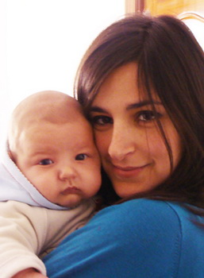

María Fabregat Moreno
María Fabregat Moreno  María Fabregat Moreno
María Fabregat Moreno 
 Haz clic aquí para detalles de la Familia de María con Carlos Gustavo Martín Alonso
Haz clic aquí para detalles de la Familia de María con Carlos Gustavo Martín Alonso
This page is within a frameset. View the entire genealogy report of Fabregat Moreno families, or surname index of Fabregat Moreno pedigrees or report summary of Fabregat Moreno heritage from "Árbol Genealógico de Manolo y Amalia".
Family Systems Theory.
© 2006 GenoPro Inc. All Rights Reserved.